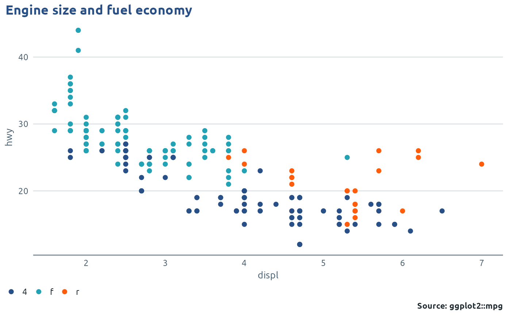

A clean theme that follows how Public Health Wales reports, including those of its Communicable Disease Surveillance Centre (CDSC), draw charts:
Usage
theme_phw(
base_size = 11,
base_family = phw_font(),
...,
grid = c("y", "x", "xy", "none"),
legend = "bottom",
legend_title = FALSE,
strip = c("light", "navy", "plain"),
axis_line = TRUE,
axis_ticks = FALSE,
grid_minor = FALSE,
title_colour = phw_colours[["navy"]],
text_colour = phw_colours[["text"]],
background = "#FFFFFF",
base_line_size = base_size/22,
base_rect_size = base_size/22,
accessible = FALSE
)Arguments
- base_size
Base font size in points. Reports use 11 for body text.
- base_family
Font family. Defaults to
phw_font()(Ubuntu).- ...
Any other theme settings, passed to
ggplot2::theme(). They override the PHW defaults, so you don't need a separate+ theme().- grid
Which major gridlines to draw:
"y"(default, horizontal lines for vertical bars and time series),"x"(for horizontal bars),"xy"or"none".- legend
Legend position:
"bottom","top","right","left","inside"or"none", or a numericc(x, y)inside the panel.- legend_title
Show the legend title? PHW reports usually don't.
- strip
Facet strip style:
"light"(grey band, navy text),"navy"(navy band, white text) or"plain"(text only).- axis_line
Draw a mid-grey line along the bottom axis?
- axis_ticks
Draw axis tick marks?
- grid_minor
Draw minor gridlines too (on the same axes as
grid)?- title_colour, text_colour
Colours for the title and other text.
- background
Plot background. Use
"transparent"for slides or web pages with their own background.- base_line_size, base_rect_size
Line and border widths, as in
ggplot2::theme_grey().- accessible
Larger text and thicker lines for public-facing or low-vision outputs. Raises
base_sizeto at least 13 and makes lines and points bigger. (On ggplot2 before 4.0 the lines and points only grow when this is set throughuse_phw_ggplot().) It doesn't change any colours: for the colour-blind safe palette seephw_default_palette().
Details
a white background with light gridlines on the value axis only
the legend at the bottom with no title
a bold navy title on the left
a bold, right-aligned source line in the caption
facet strips with bold navy left-aligned labels on a light grey band
Adding theme_phw() to a plot styles that one plot. To style every plot,
and to get PHW colours without adding a scale_*() to each one, call
use_phw_ggplot() once instead (the phw_*_document() formats do this
for you). vignette("phwstyle") shows how the pieces fit together.
A theme can only carry colours from ggplot2 4.0 on. There, theme_phw()
on its own also gives groups the PHW palette. With ggplot2 3.5 it styles
the text, gridlines and legend only, and groups keep the ggplot2 colours
unless you add a PHW scale or call use_phw_ggplot(), which works the
same on both.
Examples
library(ggplot2)
ggplot(mpg, aes(displ, hwy, colour = drv)) +
geom_point() +
labs(title = "Engine size and fuel economy",
caption = phw_caption("ggplot2::mpg")) +
theme_phw()
